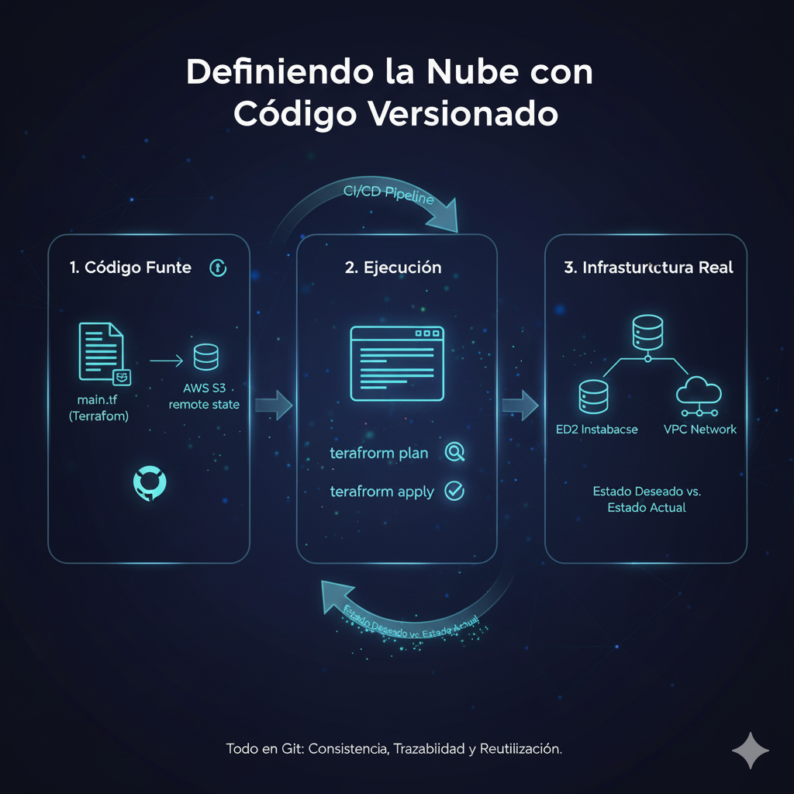
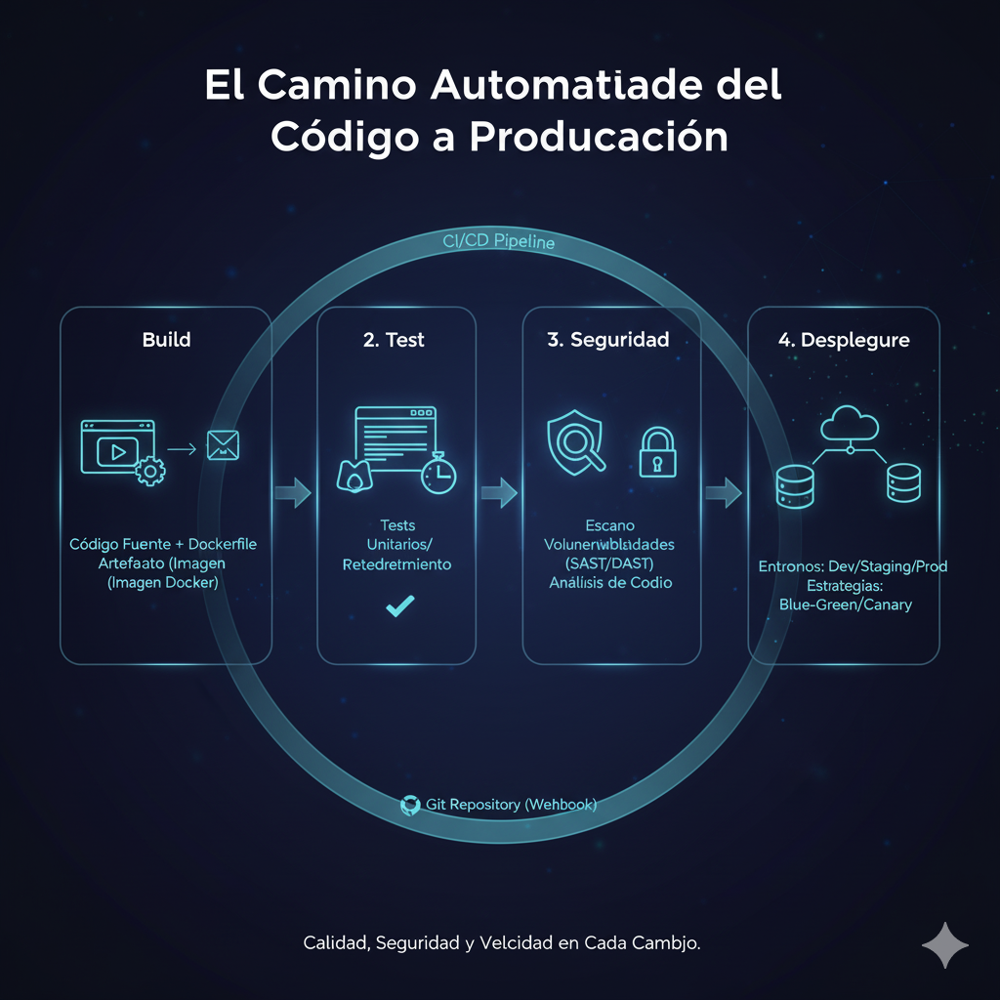

Publicado el
Automatización DevOps: De la Infraestructura al Despliegue
La automatización es el corazón que bombea la sangre en las venas de DevOps y SRE...
Infraestructura como Código (IaC): Los Cimientos
Atrás quedaron los días de aprovisionar servidores manualmente...
- Modularización: No escribo un archivo gigante de Terraform para todo...
- Reutilización: Gracias a los módulos, puedo crear un nuevo entorno completo en minutos...
- Manejo de Estados Remotos: Terraform necesita un archivo de estado para saber qué infraestructura ha creado...
 Definiendo la nube con código versionado.
Pipelines de CI/CD: La Línea de Ensamblaje
Un pipeline de CI/CD es una línea de ensamblaje automatizada...
- Build: Se compila el código y, más comúnmente hoy en día, se construye una imagen de contenedor (Docker)...
- Test: Se ejecutan pruebas automatizadas contra el artefacto recién creado...
- Seguridad: ¡La seguridad no es negociable!...
- Despliegue: Si todas las etapas anteriores (o gates de calidad) se superan, el pipeline despliega el artefacto...
 El camino automatizado del código a producción.
Operación Confiable: Despliegues a Prueba de Fallos
Llegar a producción es solo la mitad del camino...